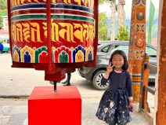
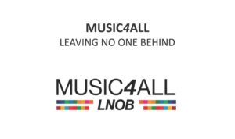
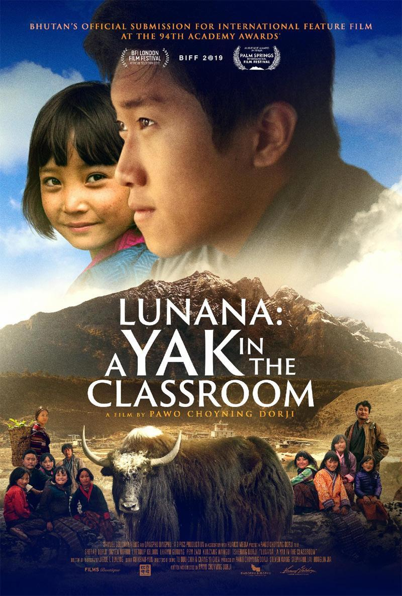
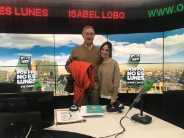
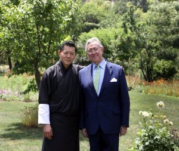
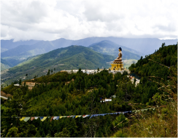
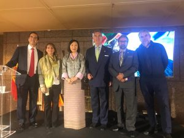
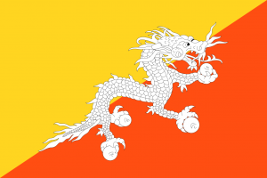

Inicio · Noticias y contenidos
Blog
Artículos, noticias y relatos para profundizar en GNH y en la cultura de Bután.

Crónica y materiales del viaje "Reflexiones y Conexiones" a Bután organizado con el Centro GNH de Bután.

Resumen de novedades de la asociación y del universo GNH: la escuela de música en Bután, GNH en universidades y el Día Internacional de la Felicidad.
Actualización del proyecto solidario de música impulsado junto a la comunidad para acercar la educación musical a Bután.

Pase benéfico de la película butanesa nominada al Óscar, con el fin de recaudar fondos para el proyecto de música en Bután.
Presentación del calendario de actividades de la asociación y del nuevo proyecto musical de la comunidad GNH.
Encuentro presencial en torno al cine butanés, con el pase de "Lunana: a yak en la clase" para sostener el proyecto de música.
Mensaje del Presidente de GNH España con motivo del 10º aniversario del Día Internacional de la Felicidad, impulsado por Bután en la ONU.
"Lunana: A Yak in the Classroom" logra la nominación al Óscar como Mejor Película Extranjera para Bután.
Comunicado del Presidente de GNH Center Spain, Ian Triay, sobre la situación del país durante la pandemia.
El Dr. Mario Alonso Puig, socio-fundador de GNH Center Spain, comparte un mensaje de consejos y sentido común en momentos difíciles.

Entrevista a nuestro presidente en el programa "Por Fin No Es Lunes" de Onda Cero.

Ian Triay, Presidente de GNH Center Spain y Cónsul General Honorario de Bután en España, se reúne con el nuevo Primer Ministro de Bután.

Crónica del viaje a Bután del 13 al 18 de octubre de 2019 organizado a través de GNH.

Crónica fotográfica del acto de presentación de GNH Center Spain en Madrid, con la Embajadora de Bután y el Dr. Mario Alonso Puig.
El documental "Taking the middle path to happiness", emitido en TV2, acerca la cultura butanesa y el concepto de Felicidad Interior Bruta.
Origen, significado y uso de "Tashi Delek", el saludo tradicional butanés.

La historia de Bután y cómo nació en el reino la filosofía de la Felicidad Interior Bruta (GNH).
Una reflexión sobre qué es GNH (Felicidad Interior Bruta) y cómo guía las decisiones hacia un futuro mejor.